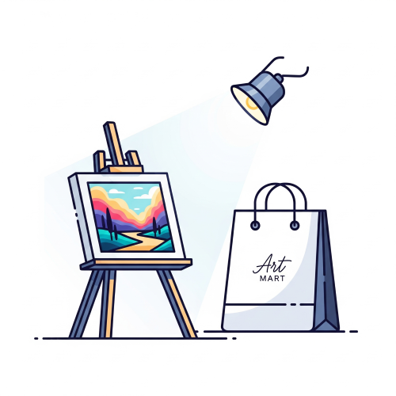
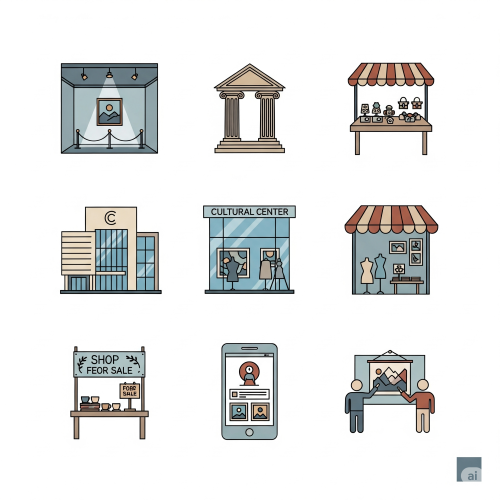

Marketing of Art Works
Meaning of Marketing of Art Works
Marketing of art works simply means the process of selling artworks to the public. It involves all the activities that help the artist to display, promote, advertise, and sell their creative products. It helps the artist to earn income from their talent and hard work.

Marketing of artworks is essential because it is the process that allows artists to earn a living from their talent and hard work. It bridges the gap between the creator and the audience by displaying, promoting, and selling their creative products. This process helps to build the artist's reputation and ensures that their work is seen and appreciated by the public, ultimately making art a sustainable profession.
Types of Artworks That Can Be Sold
following types of artworks can be marketed:
- Paintings – Done with oil, watercolour, or acrylic on canvas or paper.
- Drawings – Made with pencil, charcoal, ink, etc.
- Textile designs – Such as tie and dye, batik, and embroidery.
- Pottery – Making of clay items like pots, bowls, and vases.
- Beadwork – Using beads to make necklaces, bracelets, and traditional wears.
- Sculptures – Carving wood, stone, or modeling clay into figures.
- Weaving – Baskets, mats, and cloths using natural or synthetic fibres.
- Graphic designs – Like posters, signboards, labels, and calendars.
Where Artworks Can Be Sold
It's not just a physical space; it's a strategic choice that determines the art's audience, its perceived value, and the type of interaction a buyer has with the work.

Artists can market or sell their products in the following places:
- Art galleries.
- Exhibitions and shows.
- Museums.
- Cultural and tourist centres.
- Craft markets.
- Shops and boutiques.
- Roadside stands.
- Online platforms (websites, social media like Facebook, Instagram, WhatsApp)
Ways of Marketing Art Works
- Displaying art in galleries and exhibitions.
- Advertising through posters, flyers, and newspapers.
- Using mobile phones and the internet to promote artworks.
- Selling directly to customers or clients.
- Allowing customers to place orders (commissioned works).
- Selling prints and merchandise with art designs.
- Collaborating with businesses and decorators.
Qualities of a Good Marketer of Art Works
To succeed in selling artworks, the artist or marketer must have:
- Good communication skills.
- Politeness and patience.
- Neatness and proper dressing.
- Knowledge of their art products.
- Honesty and integrity.
- Ability to fix fair and attractive prices.
- Creativity and good presentation.
Sources of Funding for Marketing Art Works
- Personal savings – Money saved by the artist from previous work.
- Family and friends – Financial support from relatives or close supporters.
- Government grants and loans – Provided through art councils or youth empowerment programs.
- Non-governmental organizations (NGOs) – Some NGOs fund young or rural artists.
- Art cooperatives and associations – Group contributions to support members.
- Corporate sponsorships – Big companies can sponsor exhibitions or artists.
- Crowdfunding – Raising small amounts of money from many people through websites (e.g. GoFundMe).
- Bank loans – From microfinance banks or cooperative societies.
- Art competitions and awards – Winning cash prizes or scholarships.
Challenges Facing Marketing of Art in Nigeria
- Lack of government support.
- Low interest or appreciation of art.
- High cost of materials.
- Few art galleries and exhibition spaces.
- Lack of business knowledge among artists.
- Limited access to the internet and online buyers.
Suggested Solutions to the Challenges
- Government and private support for artists.
- Training workshops on art and marketing.
- Providing loans and grants for art businesses.
- Creating more art centres and festivals.
- Teaching entrepreneurship and marketing in art classes.
- Encouraging artists to use online platforms.
Why It Is Important to Market Art Works
- It helps the artist to make money.
- It promotes local culture and skills.
- It helps to preserve tradition and encourage creativity.
- It makes it possible for art to reach a wider audience.
- It builds confidence and recognition for the artist.
- It creates job opportunities and promotes self-reliance.
Careers in Marketing of Art Works
- Art seller or art dealer.
- Art gallery curator.
- Craftsman/woman.
- Art teacher.
- Fashion designer.
- Photographer.
- Art promoter.
- Social media influencer (art content).
- Online art store owner.